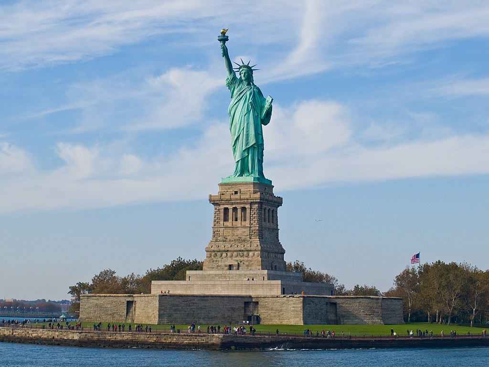
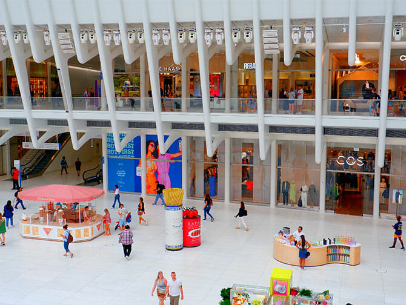

NEW YORK

New York est une ville composée de 5 arrondissements à l'embouchure du fleuve Hudson et de l'océan Atlantique. En son centre se trouve Manhattan, un arrondissement densément peuplé faisant partie des principaux centres commerciaux, financiers et culturels du monde. Ses sites incontournables comprennent des gratte-ciel comme l'Empire State Building et l'immense Central Park. Le théâtre de Broadway est situé sur Times Square.
Quelques activités a faire a New York
New York est considéré comme l'une des plus belles villes du monde et est caracterisé par ces grattes ciels et son immense parc.
VISITES DE LA STATUT DE LA LIBERTE

La Statue de la Liberté (plus formellement, Liberty Enlightening the World, et plus familièrement, Lady Liberty) est une structure située sur Liberty Island dans le port de New York, présentée aux États-Unis à l'occasion du centenaire de la signature de la Déclaration d'indépendance américaine en tant que monument. cadeau de France. Il a été conçu par Frédéric Bartholdi et doit sa couleur verte à la patine du revêtement extérieur en cuivre. La statue est mondialement connue pour être la première chose que les visiteurs par mer, les immigrants et les Américains de retour voient en entrant dans le port de New York et est connue comme un phare de liberté dans une grande partie du monde. Ce monument est classé dans les patrimoines mondial de l'UNESCO et fait l'objet de nombreuses visites.
LE CENTRAL PARK
Central Park représente, un espace vert de 340 hectares. Il se trouve à New York, dans le quartier de Manhattan et contrastant avec la forêt de gratte-ciel qui l'entoure. Au nord du parc se trouvent des collines et des vallons. La partie centrale abrite le Metropolitan Museum of Art tandis qu'au Sud, pelouses et points d'eau ponctuent le parc.
Il a d'ailleurs été utilisé en toile de fond pour de nombreuses productions cinématographiques. Visiter cet espace vert est une activité à faire au moins une fois dans sa vie.
CENTRES COMMERCIAUX

New York est egalement connu pour ces centres commerciaux La liste des meilleurs centres commerciaux de New York pourrait facilement aller au-delà de 10. Il ne fait aucun doute que New York est la première destination shopping des États-Unis. En effet, la multitude de boutiques de créateurs, de magasins de haute couture et de grands magasins de renommée mondiale attirent des millions de clients chaque année. Il y en a pour tous les goûts, des vêtements de luxe les plus raffinés aux accessoires de maison haut de gamme, en passant par les produits technologiques et bien plus encore.
RESTAURANT CHIC
Apres une journée fatiguante, rien de mieux que d'aller dans un restaurant chic pour completer la journée. Où manger à New York ? En effet, trouver de bonnes adresses de restaurants à NYC n’est pas toujours évident. Il y en a pour tous les goûts mais également pour tous les budgets… Mais aller à New York sans gouter un bon burger ou un cheesecake, ce n’est pas envisageable ! Parole de gourmands. En effet, la gastronomie fait partie intégrante de la découverte d’une destination et New York n’est pas une exception.
Vous trouverez également quelques conseils pour éviter de trop dépenser. En plus New York est connu pour ces nombreuses gratte-ciel la plupart des restaurants se trouve sur des immeubles pour accompagner un bon dîner par une vue resplendissante.